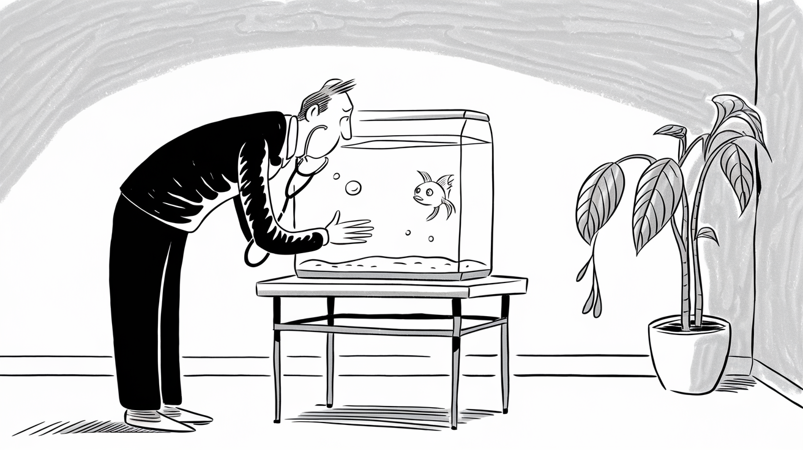
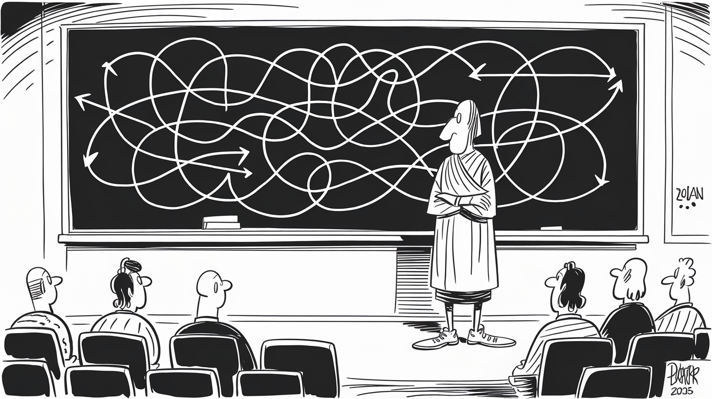

What is This?
This site is a collection of articles generated from prompts. Every article begins with a question that explores an idea or concept that is of interest to me. An AI responds with a detailed answer, which is presented alongside an automatically generated and selected illustration. Even the pull quotes are automatically selected.
What makes this site special is that the questions are the focus, not just the answers. The prompts cover a variety of topics ranging from philosophy and technology to sports and design.
This entire site was designed and implemented using Claude Code—Anthropic's AI coding assistant—and is available, built and deployed on GitHub.
Are You Avoiding High-Risk, Low-Gain Decisions?
Are You Avoiding High-Risk, Low-Gain Decisions?
Our company has thrived by delivering reliable software and earning trust; one misstep with catastrophic downside can undo years of goodwill.
Are We Wasting Human Talent Today?
Are We Wasting Human Talent Today?
By scientifically designing work, we address the second and third causes of soldiering (flawed practices and natural easiness) directly.
Short-Term Gains or Long-Term Success?
Short-Term Gains or Long-Term Success?
The short-term mindset values predictability, stability, and immediate results, often driven by data on current operations.
Why Was the 1904 Fair Called "White City"?
Why Was the 1904 Fair Called "White City"?
In short, the fair was a living encyclopedia of human achievement and a carnival of modern wonders, all in one.
Why Is Falsifiability Key to Science?
Why Is Falsifiability Key to Science?
the very refutation of a theory… is always a step forward that takes us nearer the truth.”
What's your fish trying to tell you?

What's your fish trying to tell you?
Gasping is a serious distress signal – the fish is essentially suffocating.
Is White-Collar Wage Deflation Changing Business?
Is White-Collar Wage Deflation Changing Business?
Decision-makers should evaluate ROI on tech investments not just against current labor costs, but against the future trajectory.
Do Lawyers Still Dominate Presidential Candidates?
Do Lawyers Still Dominate Presidential Candidates?
These victories show that voters have at times favored leadership experience outside the courtroom.
What's the structure of a Catholic Mass?
What's the structure of a Catholic Mass?
The liturgy explicitly sends us to 'love and serve the Lord' and to evangelize by our lives.
"Is True Wisdom Built on Paradoxes?"

"Is True Wisdom Built on Paradoxes?"
“Yet over time the truth of this adage becomes evident: people often grow through adversity, developing resilience and fortitude.”
Why Are Single Tickets More Expensive?
Why Are Single Tickets More Expensive?
the most expensive single ticket posted on StubHub on Friday is listed at $1,632… However, there are better seats for a better price.
Why Did Walt Disney Move to California?


Why Did Walt Disney Move to California?
I used to go down and stand there with tears in my eyes and look at those trains out of Union Station.
How to Negotiate Commission Splits in SaaS Deals?
How to Negotiate Commission Splits in SaaS Deals?
Predefined splits can foster a collaborative culture since reps know that helping on a deal will still earn them a share.
Who Are the 20 Most Influential Thinkers?
Who Are the 20 Most Influential Thinkers?
“Marx’s writings were largely rejected or ignored by mainstream institutions in the 19th century.”
Can Sacrifice Strengthen Your Marriage?


Can Sacrifice Strengthen Your Marriage?
a healthy marriage is not a delicate crystal that shatters at the first sign of stress, but more like a muscle or a fire
Can Maximalist Decor Elevate Your Home?


Can Maximalist Decor Elevate Your Home?
Prioritizing well-crafted older pieces and unique finds over brand-new sets gives the space a sense of history and durability.
Is the Lowest Bid Always the Winner?


Is the Lowest Bid Always the Winner?
If you bid much lower than necessary, you’ll still win, but you sacrifice profit that you could have kept.
Sunrise or Sunset: What's Your Favorite?


Sunrise or Sunset: What's Your Favorite?
Ultimately, however, a sunrise not only delights the eyes but also rejuvenates the mind and body for the day ahead.
Comparative Negative Impacts: Legalized Marijuana vs. Online Sports Betting


Comparative Negative Impacts: Legalized Marijuana vs. Online Sports Betting
The data suggest that the greater overall risk to the U.S. comes from legalized online sports betting.
Determining Optimal Chairlift Speed at Ski Resorts


Determining Optimal Chairlift Speed at Ski Resorts
Operators must obey these limits and ensure that emergency braking distances and system response times are within safe bounds at the chosen speed.
Nikola Jokić vs. Wayne Gretzky: A Legendary Comparison


Nikola Jokić vs. Wayne Gretzky: A Legendary Comparison
He would set up camp back there, protected from defenders' checks, and patiently survey the chaos in front of the goal.
Why Wealthier Countries Tend to Have Lower Birthrates


Why Wealthier Countries Tend to Have Lower Birthrates
Over generations, as societies become more prosperous, they transition from 'many births, many deaths' to 'few births, few deaths.'
Controlling Resources vs. Market Reliance: Why Companies Acquire for Control


Controlling Resources vs. Market Reliance: Why Companies Acquire for Control
Nonetheless, the incentive was clear - when a supplier can exploit you, buy the supplier.
God as “Random Seed”: Mystery and Uncertainty in Catholic and Christian Thought


God as “Random Seed”: Mystery and Uncertainty in Catholic and Christian Thought
God no more overrides genuine randomness than He overrides genuine human free will – both are real features of creation, given by the Creator.
Maximalism, Antifragility, and the Fragility of a Minimalist Mindset


Maximalism, Antifragility, and the Fragility of a Minimalist Mindset
“Ornamentation and complexity were rejected as unnecessary or even decadent distractions from pure function.”
My Answers are Free, but My Questions Will Cost You


My Answers are Free, but My Questions Will Cost You
Anyone can recall or look up an answer, but it takes wisdom, experience, and often courage to ask a truly important question.
10 Things to Look Forward to When Moving from Leawood, KS to San Francisco, CA


10 Things to Look Forward to When Moving from Leawood, KS to San Francisco, CA
There's nothing quite like clanging up and down the steep hills on San Francisco's historic cable cars.
LLM Model Weights as the DNA of AI


LLM Model Weights as the DNA of AI
Indeed, researchers describe generative model training as a form of data compression: ... the model's weights are 'the compressed version of the training set.'
The Paradox of Infinite Knowledge and Unknowable Uncertainty


The Paradox of Infinite Knowledge and Unknowable Uncertainty
Knowledge grows infinitely, yet some truths (such as exact future Black Swan events) remain forever out of reach.
History of Mining in Goa, India


History of Mining in Goa, India
It concluded that no mining could take place on these leases until they were granted afresh in accordance with law.